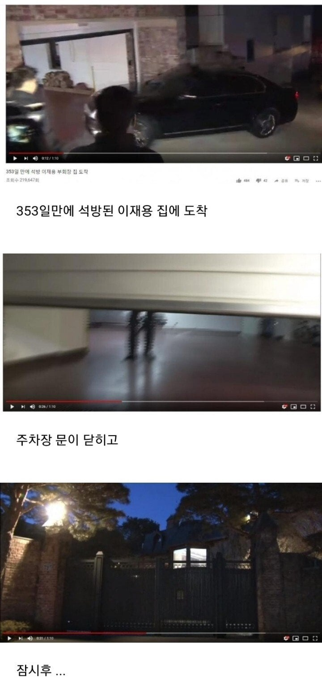

95 · 3 · 10 시간 전 · 원문

수집 당시 댓글 3개
승민이다 · 1 시간 전
시장에서 떡볶이, 치킨배달, 수사받을때 짜장면탕슉
이거 언플용으로 뿌린거잖아 서민친화 이슈로 갈라고
비행기구름 · 48 분 전
저러니 백모씨 논란에도 재평가를 못 받는...
망나뇽은나뇽나뇽 · 23 분 전
근데 이재용은 알사람은 알겠지만 저거 이미지 마케팅이였음 ㅎㅎ
시장에서 떡볶이, 치킨배달, 수사받을때 짜장면탕슉
이거 언플용으로 뿌린거잖아 서민친화 이슈로 갈라고